Hikayemiz aslında senin için çok da beklenmedik olabilir iş yerinde sana benden bahsettiklerinde benden haberin vardı aslında. Ama ben senin varlığını son ana kadar bilmiyordumve senin benii reddedişini de bilmiyordum kraaaalll ıdhysglsıdglıhjsdvılsdv. Senin ırmağın önünde çektiğin fotoğrafı gördüğümde yaklaşık 5-6 dk baktım fotoğrafa çünkü masumluğun, kalbinin temizliği yüzünden anlaşılıyordu bitanemm. Seninle konuşmaya başladığımız andan itibaren aklımdaki tek düşünce seni ömrümün sonuna kadar yanımda olmanı istememdi. Hikayemiz 5. ayını bitirip altıncı ayına girdi bugün ama sen bunu 14 şubatta okuyacaksın. Hayatımın her anında senin arkanda olacağım en büyük destekçin olacağım sevgilim, SENİ ÇOOOOKKKK SEVİYORUMM ❤️
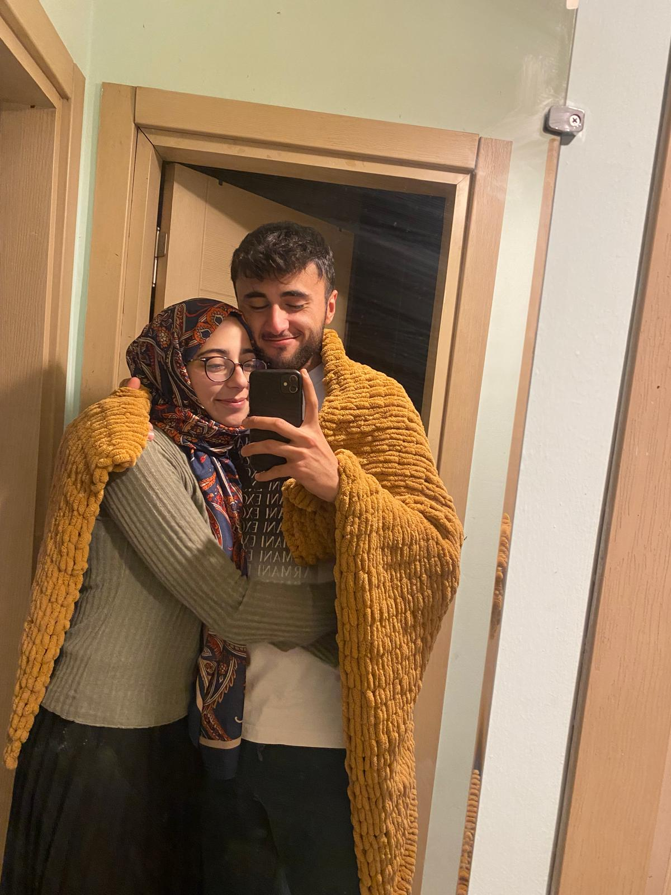
Bu fotonun çekildiği gün benim güzelleeeerrr güzelimin annemle tanıştığı gündü. Ben hayatımda ilk defa annemle birini tanıştırdım, sen benim hayatıma verilmiş bir ödülsün bitanem, değiştirmeyi düşünmediğim şeyleri değiştirmem vesile oldun,hayata bakış açımı değiştirmeme sebep oldun, her şeyim oldunnnn.
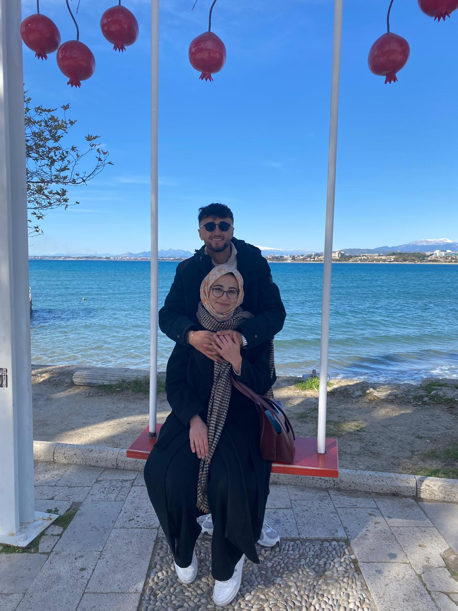
Yesss, manavgata ilk kez gelişimden kalan bi kare. En sevdiğim fotoğraflar arasında ilk 3 e girer bu fotoğraf,çünkü her zaman arkanda sana sımmmsıkı sarılıp her zaman seninle olacağım gerçeğinin fotoğrafa dökülmüş hali gibi duruyor.
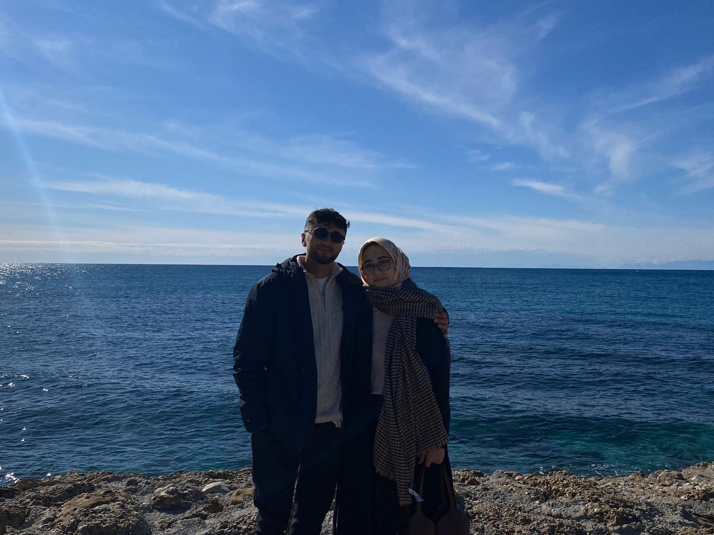
Bu fotoya ne zaman baksam sanki evliyiz gibi hissettiriyor ha bana valla sana garip gelebilir ama bana öyle bi his veriyor.

Aaaah aah nası da genç duruyoz soıjbsljıbvlsjdıbvlısddgf, ilerde bu fotoya bakıp ulan ilk buluşmamızdı be diyip ağlıcaz biliyon demi kral lıjhsdbıljhsdbvılsdvsdv.Ama şöyle bişey var benim hatunum her yaşta çok güzel olacak bundan eminim ve ben de her yaşımızda sana aşık olacağım tekrar tekrar güzelim.
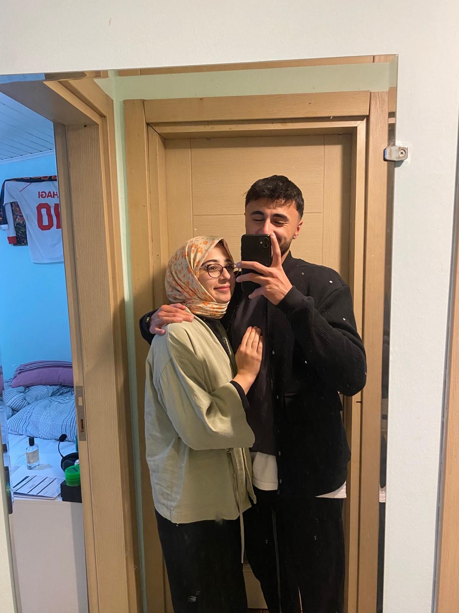
Hanımefendi her fotonuzda böyle melek gibi çıkıyorsunuz biz soluk kalıyoz olmaz böyle heee, şaka yapıyom sen her zaman benim sol yanımda ol da ben soluk kalmaya razıyım ömrümmm...
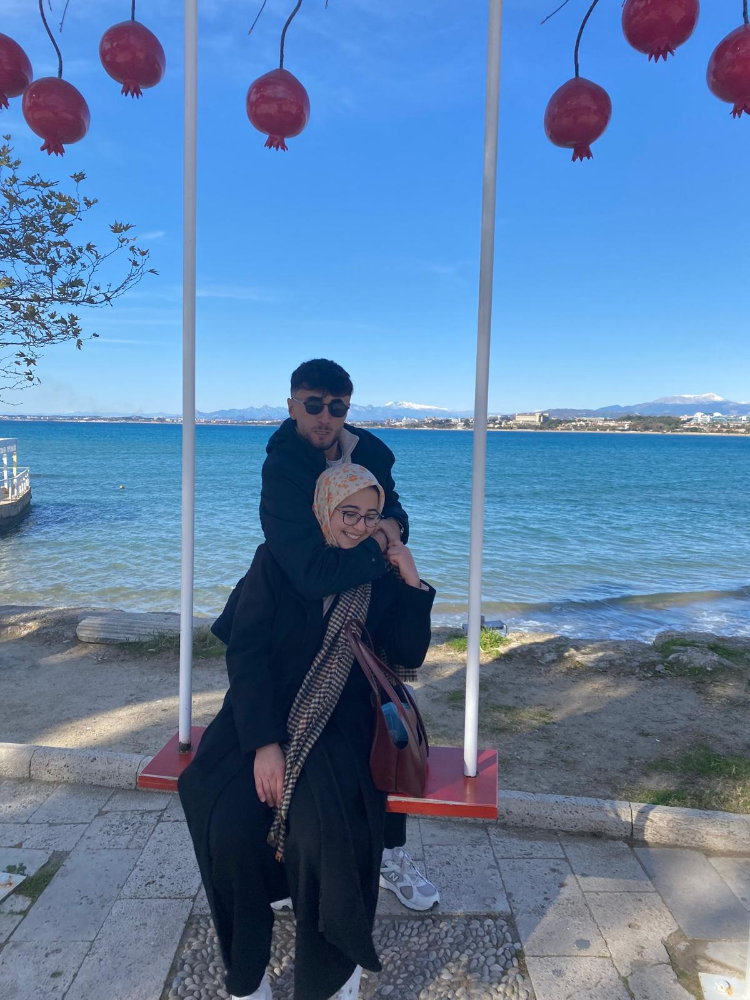
Bak bu fotoya bitiyom seıhvfıhsdvflıhsdvılsdf, her yaşta böyle eğlenceli bir çift olucaz inşallah güzelimmmm
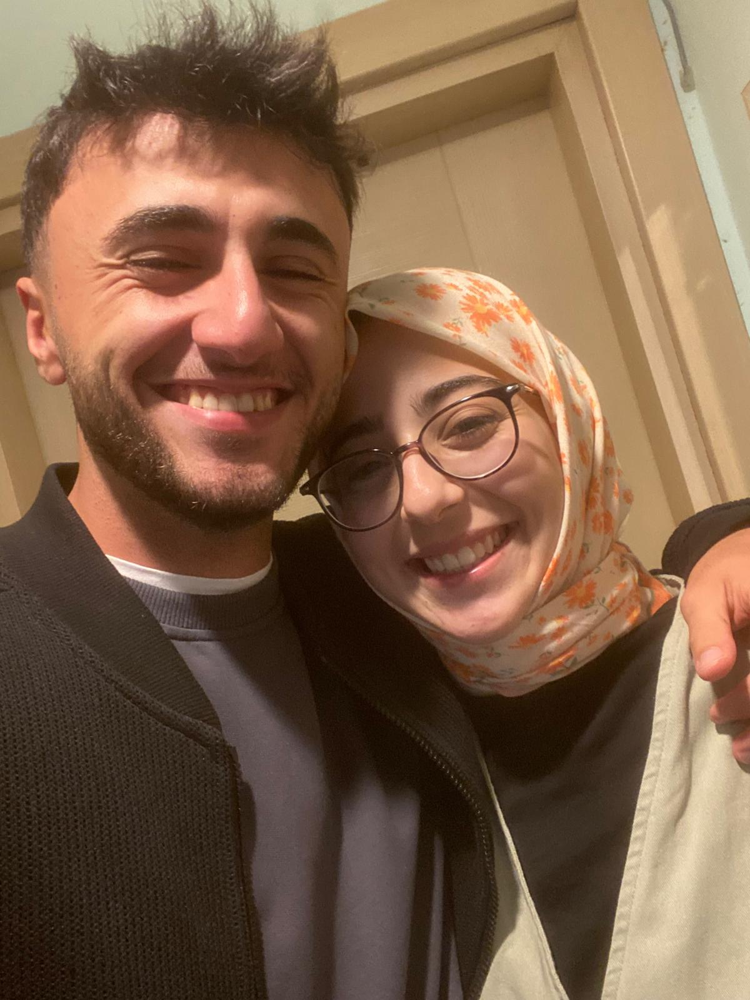
Üfffff bu güzellik ne ya ölürüm sana ölürümmmm
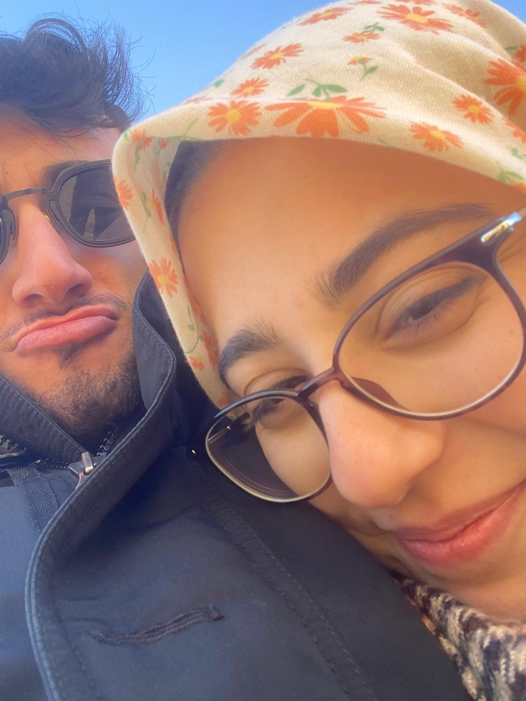
Ben gene almışım sen boyun kilidine sen bana iyi katlanıyon ha yavrum ıusdgfıusdgvbflıjsdbvlısdfv
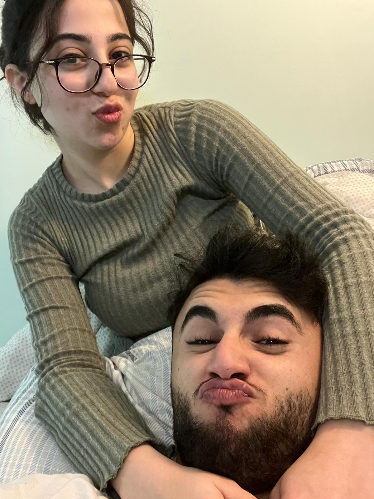
Bu da taze çekilmiş bi fotomuz hocam bi senin dudaklara bak bide bana maymuna benziyoz aw dıujgbljıshdvlsdılbvıhsdfv
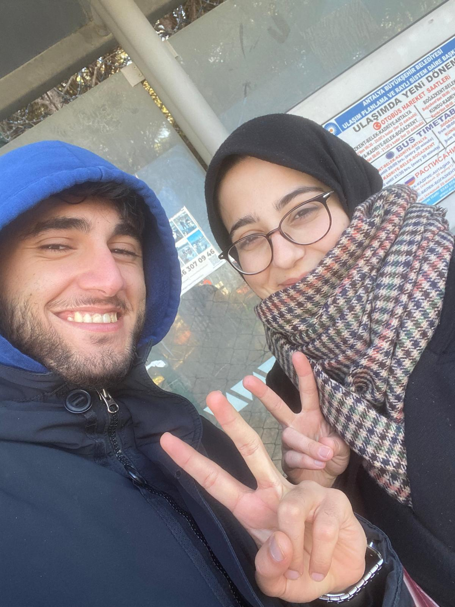
Nassı da güzel gülüyor canımın içi gel de aşık olma bu karıya yav ölürüm ölürümmmm
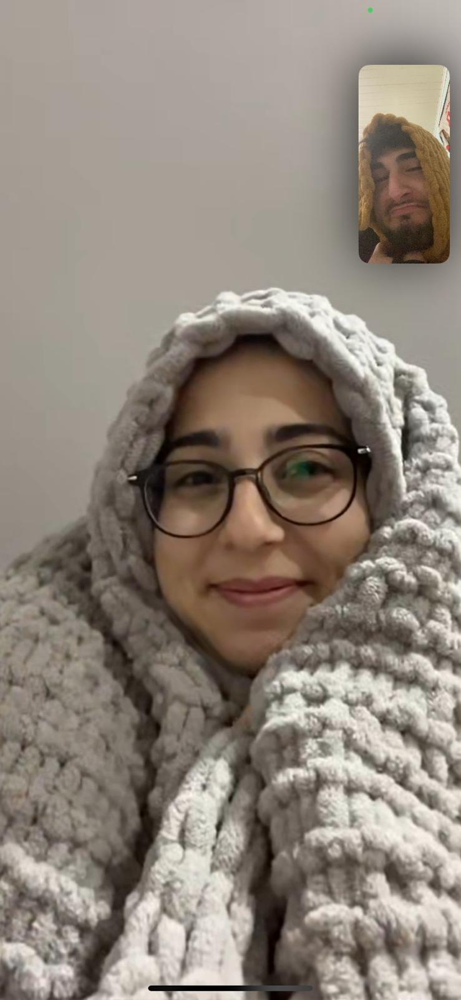
ABOOOO YANAKLRA BAK SABAH SAAT 6 BUNU YAZARKEN DELLENDİM BAK YEMEM LAZIM O YANAKLARIIII
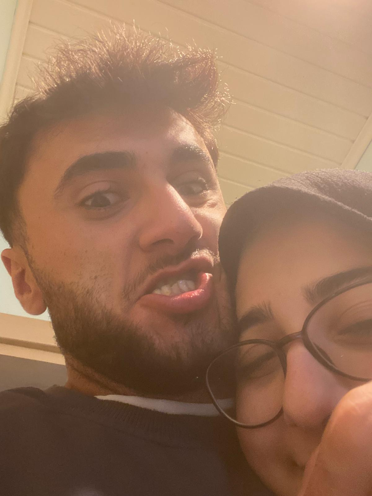
Ben sorunluyum galiba he dljkhvblkhjdsavlıkhadsvclısadvhısdlvc
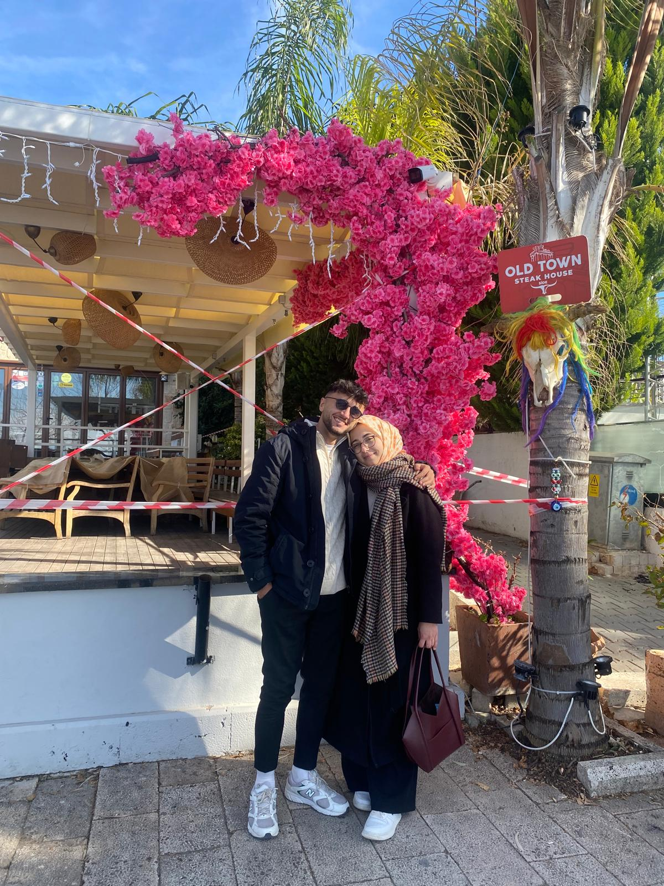
Ve evet, favorimi sona bıraktım. Senin 397562738 kez photoshopla dediğin foto jhkgfbluısdvblısdvbılsdv. Nası da güzeliz kız maşallah bize gözü olanın gözünü sss…